To be able to generate those diagrams, you must have Graphviz
software installed on your machine in the default directory c:\Program
Files\GraphvizX.XX or /usr/bin/dot.
You can have a look here if you have installed Graphviz somewhere else.
Let's have a fews examples :
Note that you can disable the shadowing using the skinparam shadowing false command.
You can also use the usecase keyword to define a
usecase.
And you can define an alias, using the as keyword.
This alias will be used latter, when defining relations.
@startuml (First usecase) (Another usecase) as (UC2) usecase UC3 usecase (Last\nusecase) as UC4 @enduml |
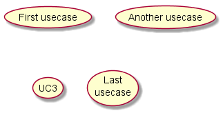 |
You can also use the actor keyword to define an
actor.
And you can define an alias, using the as keyword.
This alias will be used latter, when defining relations.
We will see later that the actor definitions are optional.
@startuml :First Actor: :Another\nactor: as Men2 actor Men3 actor :Last actor: as Men4 @enduml |
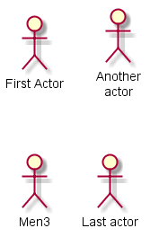 |
You can also use the following separators: --
.. == __.
And you can put titles within the separators.
@startuml usecase UC1 as "You can use several lines to define your usecase. You can also use separators. -- Several separators are possible. == And you can add titles: ..Conclusion.. This allows large description." @enduml |
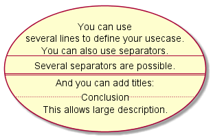 |
To link actors and use cases, the arrow --> is
used.
The more dashes "-" in the arrow, the longer the
arrow.
You can add a label on the arrow, by adding a ":"
character in the arrow definition.
In this example, you see that User has not been defined before, and is used as an actor.
@startuml User -> (Start) User --> (Use the application) : A small label :Main Admin: ---> (Use the application) : This is\nyet another\nlabel @enduml |
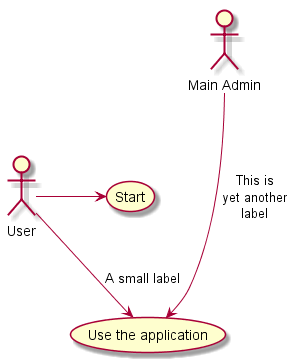 |
<|--
(which stands for ).
@startuml :Main Admin: as Admin (Use the application) as (Use) User <|-- Admin (Start) <|-- (Use) @enduml |
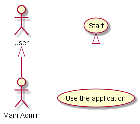 |
note left of , note right of ,
note top of , note bottom of keywords to
define notes related to a single object.
A note can be also define alone with the note
keywords, then linked to other objects using the .. symbol.
@startuml :Main Admin: as Admin (Use the application) as (Use) User -> (Start) User --> (Use) Admin ---> (Use) note right of Admin : This is an example. note right of (Use) A note can also be on several lines end note note "This note is connected\nto several objects." as N2 (Start) .. N2 N2 .. (Use) @enduml |
| 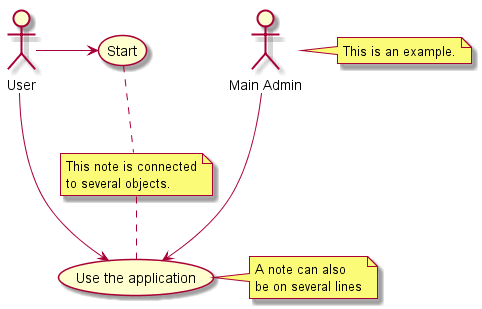 |
<<
" and " >> ".
@startuml User << Human >> :Main Database: as MySql << Application >> (Start) << One Shot >> (Use the application) as (Use) << Main >> User -> (Start) User --> (Use) MySql --> (Use) @enduml |
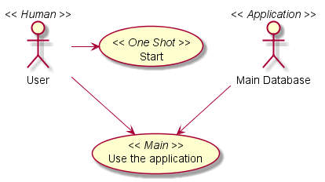 |
-- and are vertically oriented.
It is possible to use horizontal link by putting a single dash (or dot) like this:
@startuml :user: --> (Use case 1) :user: -> (Use case 2) @enduml |
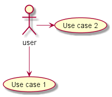 |
@startuml (Use case 1) <.. :user: (Use case 2) <- :user: @enduml |
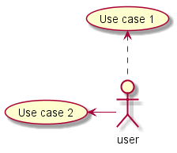 |
left, right, up
or down keywords inside the arrow:
@startuml :user: -left-> (dummyLeft) :user: -right-> (dummyRight) :user: -up-> (dummyUp) :user: -down-> (dummyDown) @enduml |
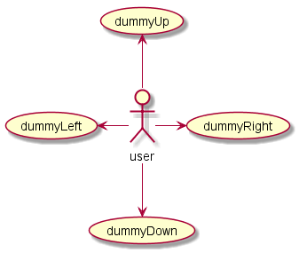 |
-d- instead of
-down-)
or the two first characters (-do-).
Please note that you should not abuse this functionality : Graphviz gives usually good results without tweaking.
title keywords is used to put a title.
You can use title and end title
keywords for a longer title, as in sequence diagrams.
@startuml title Simple <b>Usecase</b>\nwith one actor "Use the application" as (Use) User -> (Use) @enduml |
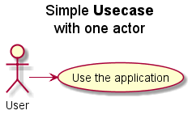 |
newpage keywords to split your diagram into several pages or images.
@startuml :actor1: --> (Usecase1) newpage :actor2: --> (Usecase2) @enduml |
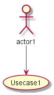 | 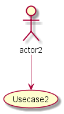 |
@startuml 'default top to bottom direction user1 --> (Usecase 1) user2 --> (Usecase 2) @enduml |
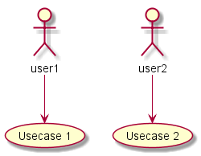 |
left to right direction command.
The result is often better with this direction.
@startuml left to right direction user1 --> (Usecase 1) user2 --> (Usecase 2) @enduml |
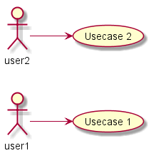 |
skinparam
command to change colors and fonts for the drawing.
You can use this command :
@startuml
skinparam usecase {
BackgroundColor DarkSeaGreen
BorderColor DarkSlateGray
BackgroundColor<< Main >> YellowGreen
BorderColor<< Main >> YellowGreen
ArrowColor Olive
ActorBorderColor black
ActorFontName Courier
ActorBackgroundColor<< Human >> Gold
}
User << Human >>
:Main Database: as MySql << Application >>
(Start) << One Shot >>
(Use the application) as (Use) << Main >>
User -> (Start)
User --> (Use)
MySql --> (Use)
@enduml
|
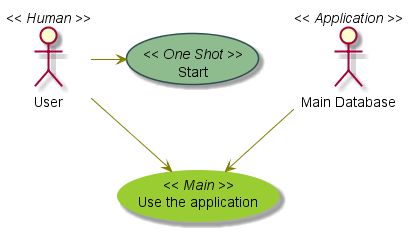 |
@startuml
left to right direction
skinparam packageStyle rect
actor customer
actor clerk
rectangle checkout {
customer -- (checkout)
(checkout) .> (payment) : include
(help) .> (checkout) : extends
(checkout) -- clerk
}
@enduml
|
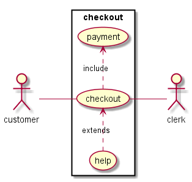 |